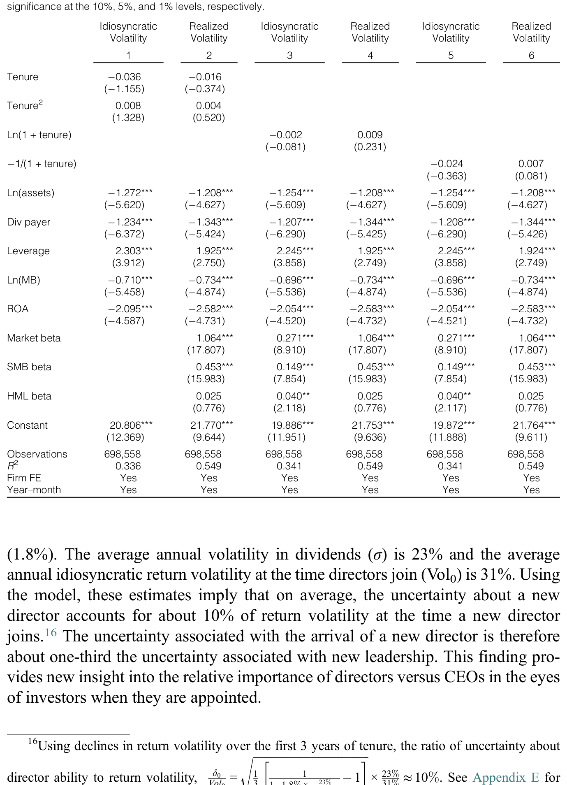
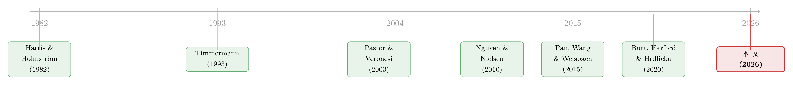

董事会的「价值」，藏在一段慢慢平息的波动里
本文读的是 Stern (2026, Journal of Financial and Quantitative Analysis)：当一位新董事加入董事会，市场并不立刻知道他「值多少」，于是开始学习——这种学习会让股票收益率波动率先上升、再随任期缓慢回落。作者把这条「波动率—任期」曲线翻译成一把尺子，量出治理相关的不确定性约占新董事到任时股票收益率波动率的 10%，大约是 CEO 的三分之一，并据此刻画出「董事在什么时候最重要」。
1 一个老问题：董事会到底值多少钱？
公司治理里有一个绕不开、却始终没被量准的问题：董事会，到底重不重要？
这个问题的历史很长。早在 Smith（1776）就讥讽过，董事们打理的是「别人的钱」，难免不上心；Berle 和 Means（1932）则担心，提名董事的权力其实握在现任管理层手里，于是董事不过是管理层「钦定的接班人」。一边说董事是监督者（monitor），一边说董事是管理层的工具（rubber-stamp，橡皮图章）。争论了快两个半世纪，谁也没说服谁。
为什么这么难？因为「重要性」这个东西，看不见、摸不着，也没有现成的标价。
过去的做法，几乎都绕着「事件」打转。最干净的一类是用董事「意外死亡」做事件研究 (event study)：一位董事猝然离世，股价怎么反应，就反推他活着时值多少（Nguyen and Nielsen (2010)、Falato, Kadyrzhanova, and Lel (2014)、Ahern and Dittmar (2012)）。也有人去翻德国公司的特殊治理结构（Jenter, Schmid, and Urban (2018)），或是直接读以色列公司的董事会会议纪要（Schwartz-Ziv and Weisbach (2013)）。还有一条更巧的路：Burt, Harford, and Hrdlicka (2020) 利用「同一位董事连接的多家公司、其特异性收益的共动」来识别，估出董事大约能解释 6.5% 的股价变动。
这些方法都很聪明，但都有一个共同的软肋：它们盯的是均值（第一矩）——股价平均怎么动。可一旦一个事件本身充满不确定与分歧，价格反应会被「打折」，于是「零反应」未必意味着「这位董事无关紧要」，很可能只是「市场还没看清他」。
这就是本文的出发点。作者 Léa Stern 没有去抢着算一个更精确的「均值」，而是换了一个矩——第二矩，也就是波动率。
2 关键的一跃：把「重要性」翻译成「不确定性」
先把直觉讲清楚。
假设董事真的会影响公司创造现金流的过程（cash flow-generating process），而不是单纯来「走过场」。那么，一位新董事到任，等于给公司价值里塞进了一个新的随机变量——他的能力 θ。问题在于：市场一开始并不知道这个 θ 是多少。
接着，一个自然的问题是：不知道，会怎样？
不知道，就要学。新董事通过自己的一桩桩决策，不断向投资者释放关于自己能力的信息；投资者像贝叶斯学习者那样，一点点更新对他的判断。而「正在学习、尚未学清」这件事本身，会抬高股票收益率的波动率——这正是 Timmermann (1993) 早就刻画过的机制：一个尚待估计的参数，会把波动率「吹胀」。
然后呢？随着信息越积越多，投资者对这位董事的更新幅度越来越小，治理相关的不确定性 (governance-related uncertainty) 被逐步消化。于是波动率从到任时的高点，沿着董事的任期 (tenure) 缓慢回落。
但真正关键的一步在于这个反转：波动率回落的「幅度」与「形状」，恰恰泄露了这位董事到底有多重要。 如果市场根本不在乎他，那他到任既不会激起波动、也无所谓学不学，曲线是平的；只有当投资者认定他会实打实地影响现金流，「学习」才有价值，波动率才会先涨后稳稳地落下来。换句话说，这条「波动率—任期」曲线的下行斜率，就是一把丈量董事重要性的尺子。
这把尺子最妙的地方，是它把一个无法观测的「重要性」，换成了一个可观测、可回归、还有横截面差异的「波动率衰减速度」。
3 模型：波动率为什么会被「学习」吹胀
这套逻辑不是凭空说的，而是建立在 Pastor and Veronesi (2003, 2009) 的「学习—估值」框架和 Pan, Wang, and Weisbach (2015) 研究 CEO 的工作之上。模型的完整推导在论文附录 A，这里把最核心的结论一步步拆开。
模型把到任董事 j 在公司 i 的能力记为 \(\theta^i_j\)，这是一个常数、但未知的参数。投资者对它有一个先验，方差为 \(\delta^2_{j,0}\)，代表「事前不确定性」（ex ante uncertainty）。随着时间推移，投资者用贝叶斯法则更新，后验方差按确定的速率收缩——而且收缩在任期早期最快。
把这套学习过程代入估值，作者得到了全文的「主方程」（附录 A 的式 (A7)，正文式 (1)），它把收益率波动率拆成了三块：
这条式子读起来其实很顺：波动率 = 基本面波动率 ×（1 + 「董事多重要」×「还有多不确定」）。
- 第一块 \(\sigma\) 是公司股利增长的基本面波动率，是学习结束后波动率的「地板」。
- 第二块 \(\mathrm{MRA}_t\) 度量的是估值（用对数股价股利比 \(\log(P/D)\) 表示）对「市场对董事能力的评估」有多敏感。如果董事根本影响不了现金流，这一项就是零，整个括号塌回 1，波动率纹丝不动。
- 第三块 \(m_t\) 是「还没学清」的程度，也就是后验不确定性。它随任期下降，而且是凸的（convex）——开头降得快、后面降得慢。
由此，模型给出三条可检验的预言：
第一，因为 \(m_t\) 与任期 \(t\) 是负向且凸的关系，所以收益率波动率随董事任期下降，且下降是凸的（学习在任期早期最快）。
第二，波动率随事前不确定性 \(\delta^2_{j,0}\) 上升——市场越拿不准一位新董事，他到任时掀起的波澜越大。
第三，新董事到任那一刻，基本面波动率会被「放大」，而放大正源于两件事的叠加：董事能力对投资者有关，且这能力不确定。两者缺一，放大就不存在。
（顺带一提，把波动率拆成几块、再逐块解释来源，这种「分解」的思路本身在波动率研究里很常见，关于另一种把市场波动按主题拆开的做法，可参见《报纸是怎么「数」出股市恐慌的：把波动拆成四十个抽屉》。）
4 识别策略：把预言搬到回归里
有了模型，接下来就是把预言翻译成可以估计的回归。基准设定是：
$$ \mathrm{Vol}_{i,t} = \beta_{1,i,j} + \beta_2\, f(\text{tenure}_{i,j,t}) + \beta_3 X_{i,t} + \lambda_t + \varepsilon_{i,t} $$
其中 \(\mathrm{Vol}_{i,t}\) 是公司 i 在第 t 月的股票收益率波动率，\(f(\text{tenure}_{i,j,t})\) 是董事 j 任期的函数（任期 = 入职后的月数除以 12），其函数形式允许模型预言的那种「递减且凸」的关系。设定里放了公司—董事配对固定效应 \(\beta_{1,i,j}\)、公司层面控制变量 \(X_{i,t}\)，以及月度固定效应 \(\lambda_t\) 来吸收影响所有公司的宏观因素；标准误在公司层面聚类（clustered at the firm level）。
核心检验就是看 \(\beta_2\)：备择假设 \(H_1: \beta_2 < 0\)（波动率随任期显著下降），对阵原假设 \(H_0: \beta_2 = 0\)（没关系）。
再往前一步，为了识别「什么时候董事更重要」，作者把任期函数与各种特征 c（董事、董事会或公司层面）交互：
$$ \mathrm{Vol}_{i,t} = \beta_{1,i,j} + \beta_2\, f(\text{tenure}_{i,j,t}) + \beta_3\, c \cdot f(\text{tenure}_{i,j,t}) + \beta_4 c + \beta_5 X_{i,t} + \lambda_t + \varepsilon_{i,t} $$
这里 \(\beta_3\) 才是主角：它告诉我们，对带有特征 c 的董事，市场学习得更快还是更慢——也就是这类董事的边际重要性是高是低。
学习这套叙事最大的威胁是内生性：董事往往是在公司动荡时被换上来的。如果新董事总是在「多事之秋」上任，那波动率的高点也许根本不是「学习」，而是公司本就乱。作者的第一道防线是：整个分析剔除 CEO 更替前后两年内发生的董事任命；并且报告说，本样本里董事任命前几个月的波动率并不反常地高。
5 数据
样本来自 BoardEx、CRSP、Compustat 三者交集中的 S&P 1500 公司：16,798 位新董事，在 2000–2014 年间被任命到 2,180 家公司的董事会，波动率一路追踪到 2019 年（或 COVID-19 暴发前）。
几个能帮你建立画面感的数字：样本里平均一家董事会有 9.4 位董事，其中 12% 是女性，19% 当过上市公司 CEO，15% 同时在三家以上公司任职（即所谓「忙碌」董事，busy directors）。公司平均每两年新增一位董事，董事典型任期约 11 年。在波动率这一侧，已实现波动率 (realized volatility) 平均约 11.3%，按 Fama-French 三因子残差算出的特异性波动率 (idiosyncratic volatility) 平均约 8.4%。
6 主要结果：先涨 10%，再慢慢平息
先看全样本的「波动率—任期」曲线。结果与模型预言高度吻合：新董事到任时，股票收益率波动率大约抬升 10%，随后沿任期逐步回落。
把这条曲线放进学习模型解读，作者给出了本文最值得记住的那个量级：
当一位新董事到任，治理相关的不确定性约占股票收益率波动率的 10%——大约是 Pan et al. (2015) 为 CEO 估出的数字的三分之一。这给了我们一个干净的基准：相对于「管理层不确定性」，「治理（董事）不确定性」对估值的分量大概是它的 1/3。
更有意思的是横截面。模型把「下降幅度」变成了一把可比的尺子，于是作者得以回答「董事在什么条件下最重要」：
- 代际多样性（generational diversity）：当现任董事会的代际跨度更大时，市场对新进董事学习得更多——投资者似乎预期，加入一个融合了不同世代视角的董事会，新董事会更有作为。这与 Malmendier and Nagel (2011, 2016)、Malmendier, Nagel, and Yan (2021) 关于「经历塑造信念与决策」的研究遥相呼应。
- 小公司 & 高知识资本（knowledge capital）：董事在小公司、以及无形/知识资产占比更高的公司里更重要——这类公司的资产更难被外部监督和估值，董事的作用因而被放大（呼应 Erel, Stern, Tan, and Weisbach (2021) 关于「治理要看情境」的观点）。
- 委员会角色：审计与薪酬委员会的成员对投资者最「要紧」（比提名委员会更甚），凸显出财务监督才是董事的根本职责。
- 高薪独立董事：相对于现任董事会拿到更高薪酬的新进独立董事，引发的市场学习也更多——说明用「学习」识别出的重要性，与「薪酬」反映出的重要性是一致的。
7 稳健性：内生性这一关，过没过得去
只看全样本曲线还不够，毕竟内生性的阴影一直在。作者祭出两套互补的办法。
第一套，针对「董事是不是趁公司战略剧变时被换上来的」这一担忧：构造一个相似度分数，挑出那些到任前一年波动率本就很低、且新董事与被替换者「画像相近」（因而战略基本没变）的任命。
第二套更硬：构造一个「看上去外生」（plausibly exogenous）的样本，只保留两类任命——为满足新的董事会独立性上市要求而做的任命，以及接替去世或退休董事的任命。这两类任命的时点，基本与公司当下的经营状况无关。
两个样本都呈现出与学习模型一致的波动率形态，内生性的担忧因而被大大缓解。
最后是一个让人安心的安慰剂检验 (placebo test)：在那些当期并没有新董事加入的对照公司里，去拟同样的「波动率—任期」关系。如果作者的故事成立，这里就不该出现显著的下降——因为没有董事，自然没有「学习」。如表 4 所示，对照组里波动率与这个「伪任期」之间确实看不到模型预言的那种关系，从反面支持了「波动率下降确实来自市场对董事的学习」。

Table 4: reports estimates from placebo tests examining the volatility–tenure relationship in firms without director 0
8 文献脉络
把这篇文章放回它所在的谱系里，会更清楚它的位置。
最上游，是一支关于「学习管理者能力」的劳动—合约理论：Harris and Holmström (1982)、Murphy (1986)、Gibbons and Murphy (1992)、Holmström (1999)。它们奠定了一个核心思想——市场（或雇主）对一个人的能力是逐步学习的。
接着，Timmermann (1993) 把「待估参数会吹胀波动率」这一机制讲透；Pastor and Veronesi (2003, 2009) 则把「学习公司盈利能力」和「估值」正式焊在一起，指出估值天然与学习相连。
然后，真正把这套框架搬进公司金融的，是 Pan, Wang, and Weisbach (2015)：他们用同一套学习过程去研究 CEO，估出管理层不确定性对波动率的分量。与此同时，识别「董事价值」的实证文献沿着事件研究一路走来，从 Nguyen and Nielsen (2010) 的董事意外死亡，到 Burt, Harford, and Hrdlicka (2020) 利用董事连接公司的特异性收益共动。

本文所处的位置，正是这两条线的交汇点：它把 Pan et al. (2015) 用在 CEO 身上的贝叶斯学习框架，推广到了整个董事会，用「波动率随任期的下降」给董事的重要性提供了一个理论扎实、又适用于大样本的度量。
9 评论与延伸（Q&A + 研究方向）
(a) 几个可能的疑问
Q：用「波动率（第二矩）」而不是「股价反应（第一矩）」，到底好在哪？
好在它绕开了事件研究的两个老大难。其一，董事任命的「公告日」常常模糊、难以精确锁定，而波动率不依赖某一天的价格跳变。其二，当事件充满不确定与分歧时，第一矩（均值反应）会被衰减，「零反应」会被误读成「无关紧要」；第二矩则恰恰刻画了「不确定性被解决」的全过程，反而能看出董事是否真的影响了现金流。
Q：波动率随任期下降，会不会只是因为「时间本身」？比如公司变成熟、风险下降？
这正是公司—董事配对固定效应和月度固定效应要对付的：前者吸收了公司与董事配对的恒定差异，后者吸收了所有公司共同经历的时间趋势。更直接的是安慰剂检验——在没有新董事的对照公司里，同样的「时间」并没有带来同样的波动率下降。此外作者还报告，公司的市场、SMB、HML 这三个 beta 在董事任期内没有特定走势，说明系统性风险敞口没在偷偷变化。
Q：10% 这个数字，和 Burt et al. (2020) 的 6.5%、Pan et al. (2015) 的 CEO 估计，是一回事吗？
不完全是，所以要小心比较。Burt et al. 的
6.5%是「董事解释的股价变动」份额，识别自跨公司的特异性收益共动；本文的10%是「治理不确定性占到任时收益率波动率」的份额，识别自学习导致的波动率衰减。两者口径不同。能直接对照的是本文自报的「约为 CEO 的三分之一」——把董事和管理层放在同一把尺子上量，这个相对量级本身就是一项贡献。
Q：「代际多样性让市场学得更多」，会不会只是说新董事更难被看懂、噪声更大？
模型对这两种解释是可以区分的：纯噪声会抬高事前不确定性 \(\delta^2_{j,0}\)（预言二），但未必改变「下降幅度」所代表的边际重要性（MRA）。作者强调的是后者——在代际多样的董事会里，新董事被认为更可能有实质影响，所以才值得市场更用力地学。当然，把「更重要」和「更难懂」彻底剥离开，仍是这类设计天然要面对的张力。
Q：剔除 CEO 更替前后两年的任命，会不会把最有意思的样本也扔掉了？
会牺牲一部分外部有效性——恰恰是治理最戏剧化的时刻被排除了。但这是为识别的纯净度付的代价：CEO 更替期的波动既来自治理动荡，也来自经营动荡，混在一起就没法干净地归因于「学习董事」。把这段切掉，换来的是「波动率下降确实来自治理学习」这一解释更可信。
Q：这套框架能说董事「创造了价值」，还是只能说董事「有影响」？
严格讲是后者。波动率随任期下降，证明的是投资者认为董事的行为与公司价值相关、且这种不确定性会被解决；它度量的是「感知到的重要性 / 影响」，并不直接等于「正向的价值创造」。一个被市场认定会大幅搅动现金流的董事（无论好坏），都会引发学习。这是用第二矩换来识别力的同时，必须接受的解释边界。
(b) 几个可能的研究问题与提案
1. 把这把「学习尺子」搬到公司债与信用利差上
【经济故事】股票波动率反映股东对董事的学习；那债权人呢？董事会（尤其审计委员会）的财务监督质量，理应影响违约风险的不确定性。新董事到任后，公司债的信用利差波动率、或 CDS 利差的不确定性，是否也会先升后降？
【可行性】中。需要把
BoardEx的董事任命与TRACE债券成交、CDS 数据按公司—月度匹配，复用本文「波动率—任期」的回归设定，把因变量换成利差波动率。难点在债券流动性带来的噪声，需要剔除非流动券、并控制久期。识别思路可直接搬用本文的「看上去外生」样本。
2. 外资董事 / 外资持有人会改变「学习速度」吗？
【经济故事】如果董事会里有跨境背景的董事，或公司有大量外资持有人，信息环境与监督渠道都不同。市场对这类董事的学习，可能因信息不对称更慢、也可能因外部关注更快。这能把「代际多样性」的发现，自然延伸到「国别 / 跨境多样性」。
【可行性】中。
BoardEx含董事国籍信息，外资持有人可由 13F / FactSet 机构持仓拼出。识别仍靠交互项 \(\beta_3\)；主要风险是外资持仓本身的内生性（外资偏好治理好的公司），需要用本文式的「看上去外生」任命来缓解。
3. 强制性多样性立法，是一次现成的外生冲击
【经济故事】本文用「为满足独立性上市要求」的任命构造外生样本。沿这个思路，加州等地的「董事会性别 / 多样性强制令」提供了更锐利的断点：被法规推上来的董事，其引发的市场学习幅度，和自愿任命的董事相比有何不同？
【可行性】高。立法时点与适用范围清晰，可做双重差分 (difference-in-differences, DiD) 或断点。数据齐备（
BoardEx+CRSP）。文献里 Ahern and Dittmar (2012)、Matsa and Miller (2013) 已用类似冲击，本文框架能给出一个「波动率视角」的新因变量。
4. 「学习曲线」的形状本身，能不能预测后续业绩？
【经济故事】如果波动率下降越快代表市场越快「看清」一位董事，那么学习曲线的斜率，是否与该董事任期内公司的运营 / 股价表现相关？换句话说，市场早期的「学习强度」有没有预测力？
【可行性】中。在本文样本上，按董事估出个体层面的下降斜率，再与后续 ROA、异常收益做横截面回归即可。风险是斜率估计的噪声较大，需要足够长的任期窗口和收缩 (shrinkage) 处理。
10 我的判断
这篇文章最漂亮的地方，是那一次「换矩」的转身：当所有人都在第一矩里争论董事的股价反应是正是负、是大是小时，它退后一步，盯住第二矩，把一个看不见的「重要性」翻译成一条能回归、能交互、能做横截面的波动率曲线。10%、「约 CEO 三分之一」这两个数字，第一次给「董事相对于管理层有多重要」提供了一个可比的基准——这是实打实的贡献。代际多样性、知识资本、委员会角色这几个横截面发现，也都讲出了「治理要看情境」的好故事。
要说对识别的担忧，主要有三点。其一，因变量是「感知到的重要性」而非「价值创造」，波动率下降只说明市场认为董事相关且不确定在消解，方向（好董事还是坏董事）是被抹掉的。其二，识别的纯净依赖「剔除 CEO 更替 ±2 年」和「看上去外生样本」，前者牺牲了最戏剧化的治理时刻，后者样本量与代表性都打了折——两个稳健样本「形态一致」是定性证据，我更想看到在这些子样本里 \(\beta_2\) 的点估计与置信区间能否经得起并排比较。其三，模型假定真实能力恒定、不确定性确定性地收敛到零；现实里董事能力会变、信息流也不均匀，若按 Holmström (1999) 让不确定性收敛到一个正的稳态，斜率的解读会更稳妥。
后续我最想看到的，是把这把尺子推到债权人那一侧（见上面的提案 1）：股东的学习写进了股价波动，债权人对治理的学习理应写进信用利差的波动。如果两侧的「学习曲线」形状不一致，那本身就是一个关于「董事到底在为谁服务」的有趣证据。
参考文献
- Ahern, K. R., and A. K. Dittmar (2012). The Changing of the Boards: The Impact on Firm Valuation of Mandated Female Board Representation. Quarterly Journal of Economics 127(1), 137–197.
- Adams, R. B., and D. Ferreira (2009). Women in the Boardroom and Their Impact on Governance and Performance. Journal of Financial Economics 94(2), 291–309.
- Berle, A. A., and G. Means (1932). The Modern Corporation and Private Property. New York, NY: Harcourt, Brace and World.
- Burt, A. J., J. Harford, and C. Hrdlicka (2020). How Much Do Directors Influence Firm Value? Review of Financial Studies 33(4), 1818–1847.
- Coles, J. L., N. D. Daniel, and L. Naveen (2014). Co-Opted Boards. Review of Financial Studies 27(6), 1751–1796.
- Core, J., R. Holthausen, and D. Larcker (1999). Corporate Governance, Chief Executive Officer Compensation, and Firm Performance. Journal of Financial Economics 51(3), 371–406.
- Eisenberg, T., S. Sundgren, and M. T. Wells (1998). Larger Board Size and Decreasing Firm Value in Small Firms. Journal of Financial Economics 48(1), 35–54.
- Erel, I., L. H. Stern, C. Tan, and M. S. Weisbach (2021). Selecting Directors Using Machine Learning. Review of Financial Studies 34(7), 3226–3264.
- Falato, A., D. Kadyrzhanova, and U. Lel (2014). Distracted Directors: Does Board Busyness Hurt Shareholder Value? Journal of Financial Economics 113(3), 404–426.
- Fich, E. M., and A. Shivdasani (2006). Are Busy Boards Effective Monitors? Journal of Finance 61(2), 689–724.
- Gibbons, R., and K. J. Murphy (1992). Optimal Incentive Contracts in the Presence of Career Concerns: Theory and Evidence. Journal of Political Economy 100(3), 468–505.
- Harris, M., and B. Holmström (1982). A Theory of Wage Dynamics. Review of Economic Studies 49(3), 315–333.
- Holmström, B. (1999). Managerial Incentive Problems: A Dynamic Perspective. Review of Economic Studies 66(1), 169–182.
- Jenter, D., T. Schmid, and D. Urban (2018). Does Board Size Matter? Working Paper.
- Malmendier, U., and S. Nagel (2011). Depression Babies: Do Macroeconomic Experiences Affect Risk Taking? Quarterly Journal of Economics 126(1), 373–416.
- Malmendier, U., and S. Nagel (2016). Learning from Inflation Experiences. Quarterly Journal of Economics 131(1), 53–87.
- Malmendier, U., S. Nagel, and Z. Yan (2021). The Making of Hawks and Doves. Journal of Monetary Economics 117, 19–42.
- Murphy, K. J. (1986). Incentives, Learning, and Compensation: A Theoretical and Empirical Investigation of Managerial Labor Contracts. RAND Journal of Economics 17(1), 59–76.
- Nguyen, B. D., and K. M. Nielsen (2010). The Value of Independent Directors: Evidence from Sudden Deaths. Journal of Financial Economics 98(3), 550–567.
- Pan, Y., T. Y. Wang, and M. S. Weisbach (2015). Learning about CEO Ability and Stock Return Volatility. Review of Financial Studies 28(6), 1623–1666.
- Pastor, L., and P. Veronesi (2003). Stock Valuation and Learning about Profitability. Journal of Finance 58(5), 1749–1790.
- Pastor, L., and P. Veronesi (2009). Learning in Financial Markets. Annual Review of Financial Economics 1, 361–381.
- Schwartz-Ziv, M., and M. S. Weisbach (2013). What Do Boards Really Do? Evidence from Minutes of Board Meetings. Journal of Financial Economics 108(2), 349–366.
- Timmermann, A. G. (1993). How Learning in Financial Markets Generates Excess Volatility and Predictability in Stock Prices. Quarterly Journal of Economics 108(4), 1135–1145.
- Yermack, D. (1996). Higher Market Valuation of Companies with a Small Board of Directors. Journal of Financial Economics 40(2), 185–211.